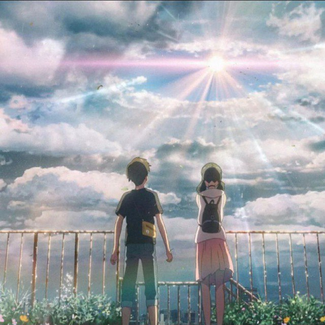

Bizning telegram sahifamiz| Forgotten Titans |
Web-saytlar haqida hamda o'yinlar haqida ma'lumotlar

O'rta maktabning birinchi yilining yozi. Xodaka Morishima Tokioda
yashashni davom ettirish uchun izolyatsiya qilingan oroldagi uyidan
qochib ketadi. Biroq, katta shahardagi hayot haqiqiy omon qolishga
aylanadi: yigit ish topish va pul topishda qiyinchiliklarga duch keladi.
Xodaka ma’lum muddat okkultizm haqidagi shubhali jurnalda muxbir bo‘lib
ish topguncha yolg‘iz yashaydi, tashqarida esa, nasib qilmagandek, kun
bo‘yi yomg‘ir yog‘adi. Shovqinli va gavjum shaharning burchaklaridan
birida Xodaka Xina Amanoni uchratadi, u oilaviy sharoiti tufayli ukasi
bilan yashaydi. Xina noodatiy kuchga ega: u faqat ibodat qilish orqali
yomg‘irni to'xtata oladi va osmondan bulutlarni tozalaydi.
Janr: Maktab, Dramma, Komediya, Hayotiy
Yozuvchi:
Manga Chop etilgan:
Manga:
Jurnal Shonen Yakshanba Super Grafika:
Seriya Nashri:
Jildlar:
Anime filmi:
Rejissor:
Prodyusser:
Matnlar:
Musiqa:
Studio:
Litsenziya NA:
Davomiyligi: